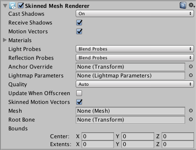

Skinned Mesh Renderer
Unity uses the Skinned Mesh Renderer component to render Bone animations, where the shape of the Mesh is deformed by predefined animation sequences. This technique is useful for characters and other objects whose joints bend (as opposed to a machine where joints are more like hinges).
A Skinned Mesh Renderer is automatically added to any Mesh that needs it at import time.
Properties

| Property: | Function: |
|---|---|
| Cast Shadows | If enabled, the Mesh will cast shadows when a suitable Light shines on it. |
| Receive Shadows | If enabled, the Mesh will show shadows that are cast upon it by other objects. |
| Motion Vectors | If enabled, the line has motion vectors rendered into the Camera motion vector Texture. See Renderer.motionVectors in the Scripting API reference documentation to learn more. |
| Materials | The list of Materials the Mesh will be rendered with. |
| Light Probes | Probe-based lighting interpolation mode. |
| Reflection Probes | If enabled, and if Reflection Probes are present in the scene, a reflection Texture will be picked for this GameObject and set as a built-in Shader uniform variable. |
| Anchor Override | A Transform used to determine the interpolation position when the Light Probe or Reflection Probe systems are used. |
| Quality | Define the maximum number of bones used per vertex while skinning. The higher the number of bones, the higher the quality of the Renderer. Set the Quality to Auto to use the Blend Weights value from the settings on the Quality window. |
| Skinned Motion Vectors | If enabled, the Mesh skinning data will be double buffered so that skinned motion can be interpolated and placed into the motion vector Texture. This has a GPU memory overhead, but leads to more correct motion vectors. |
| Update When Offscreen | If enabled, the Skinned Mesh will be updated even when it can't be seen by any Camera. If disabled, the animations themselves will also stop running when the GameObject is off-screen. |
| Mesh | Use this to define the Mesh used by this Renderer. |
| Root Bone | Use this to define the bone that is the "root" of the animation (that is, the bone relative to which all the others move). |
| Bounds | The bounding volume that is used to determine when the Mesh is offscreen. The bounds are pre-calculated on import from the Mesh and animations in the model file, and are displayed as a wireframe around the model in the Scene View. |
Details
Bones are invisible objects inside a skinned Mesh that affect the way the Mesh is deformed during animation. The basic idea is that the bones are joined together to form a hierarchical "skeleton", and the animation is defined by rotating the joints of the skeleton to make it move. Each bone is attached to some of the vertices of the surrounding Mesh. When the animation is played, the vertices move with the bone or bones they are connected to, so the "skin" follows the movement of the skeleton. At a simple joint (for example, an elbow), the Mesh vertices are affected by both of the bones that meet there, and the Mesh will stretch and rotate realistically as the joint bends. In more complex situations, more than two bones will affect a particular area of the Mesh, resulting in more subtle movements.
Although a skinned Mesh is most commonly used with predefined animations, it is also possible to attach Rigidbody components to each bone in a skeleton to put it under the control of the Physics engine. This is typically used to create the "ragdoll" effect, where a character's limbs flail after being thrown or struck by an explosion.
Quality
Unity can skin every vertex with one, two or four bones. Using four bones gives the best results but this comes with a higher processing overhead. Games commonly use two bone weights, which is a good compromise between visual quality and performance.
If the Quality is set to Auto, Unity uses the Blend Weights value from the settings on the Quality window. This allows end-users to choose the quality setting themselves and get the desired balance of animation quality and framerate.
Update When Offscreen
By default, skinned Meshes that are not visible to any camera are not updated. The skinning is not updated until the Mesh comes back on screen. This is done to save system resources.
The object's visibility is determined from the Mesh's Bounds (that is, the entire bounding volume must be outside the view of any active Camera). However, the true bounding volume of an animated Mesh can change as the animation plays (for example, the bounding volume will get taller if the character raises their hand in the air). Unity takes all attached animations into account when calculating the maximum bounding volume, but there are cases when the bounds can't be calculated to anticipate every possible use case.
Each of the following example situations become a problem when they push bones or vertices out of the pre-calculated bounding volume:
- animations added at run-time
- additive animations
- procedurally changing the positions of bones from a script
- using vertex shaders which can push vertices outside the pre-calculated bounds
- using ragdolls
In those cases, there are two solutions:
- Modify the Bounds to match the potential bounding volume of your Mesh
- Enable Update When Offscreen to skin and render the skinned Mesh all the time
You should usually use the first option, because it is better for performance. However, the second option is preferable if performance is not a major concern, or if you can't predict the size of your bounding volume (for example, when using ragdolls).
In order to make Skinned Meshes work better with ragdolls, Unity will automatically remap the Skinned Mesh Renderer to the root bone on import. However Unity only does this if there is a single Skinned Mesh Renderer in the model file. This means that if you can't attach all Skinned Mesh Renderers to the root bone or a child, and you use ragdolls, you should turn off this optimization.
Importing skinned Meshes
Currently, skinned Meshes can be imported from:
- Autodesk® Maya®
- Cinema4D
- Autodesk® 3ds Max®
- Blender
- Cheetah 3D
- XSI
- Any tool that supports the FBX format
On mobile devices, Unity handles skinning on the CPU with hand-coded NEON/VFP assembly. A limitation here is that normals and tangents are not normalized, so if you are writing your own Shaders, you should handle the normalization youself. However, if you are using Surface Shaders, Unity automatically handles the normalization.
Note: Optimized Meshes sort bones differently from non-optimized Meshes, resulting in potentially significant animation problems. This is because non-optimized Meshes rely on bone order to animate, while Optimized Meshes use the bone names and do not rely on bone order.
If you simply import the FBX file and use it, Unity will take care of the order of the transforms.
For advanced users, if you want to change SkinnedMeshRenderer.sharedMesh:
- In 'non-optimized' mode, you need to make sure that the
SkinnedMeshRenderer.bonesmatchesSkinnedMeshRenderer.sharedMeshin a strict way. The referenced Transforms should be there in the correct order. - In optimized mode, it's much simpler; the rendering works as long as the avatar has the referenced bones. In this case,
SkinnedMeshRenderer.bonesis always empty.